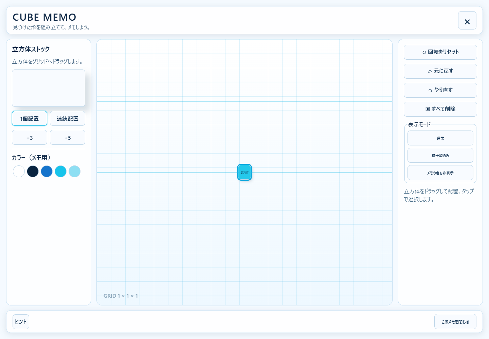
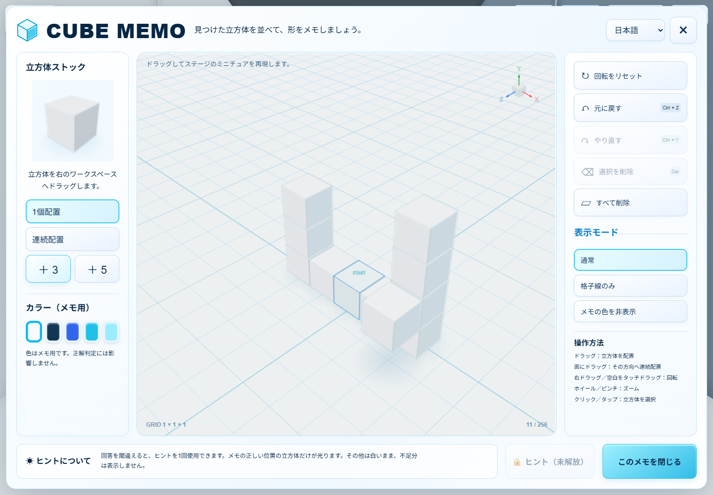
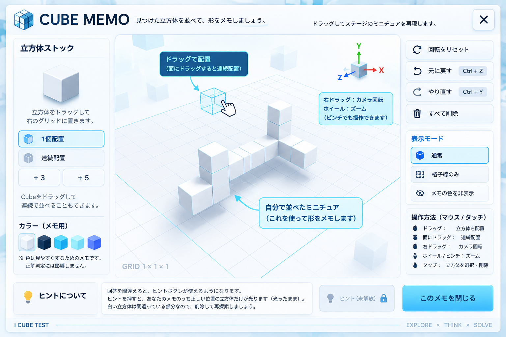
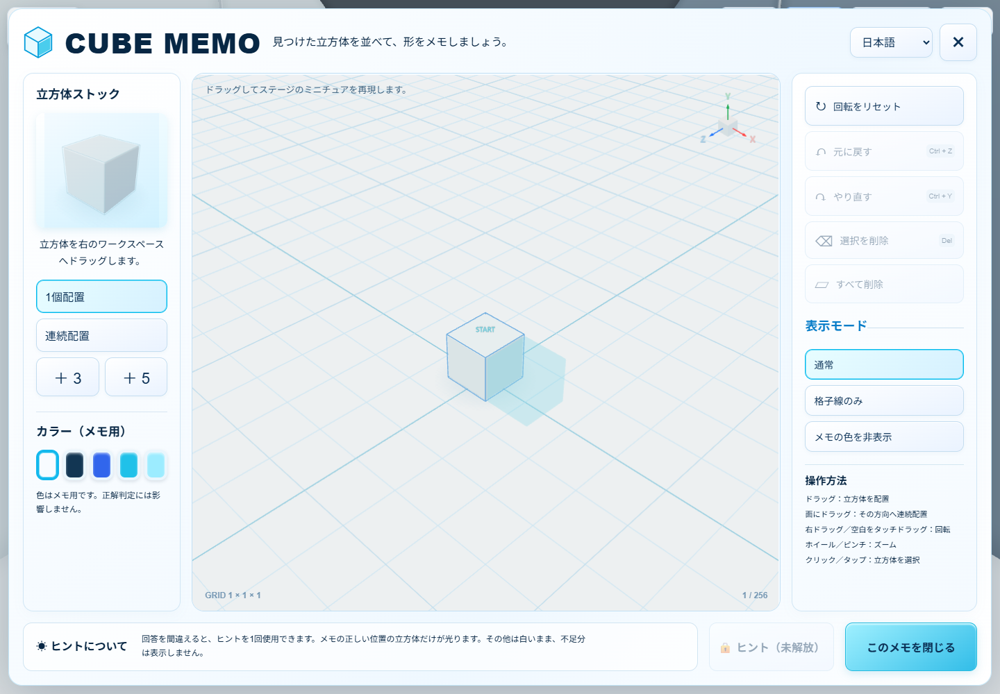
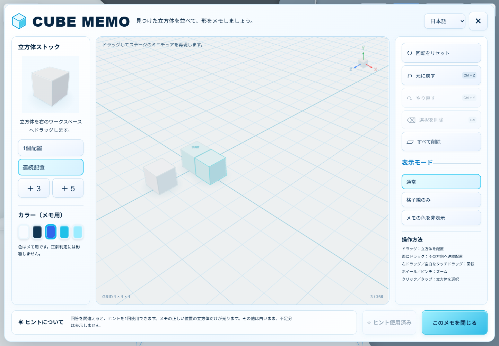
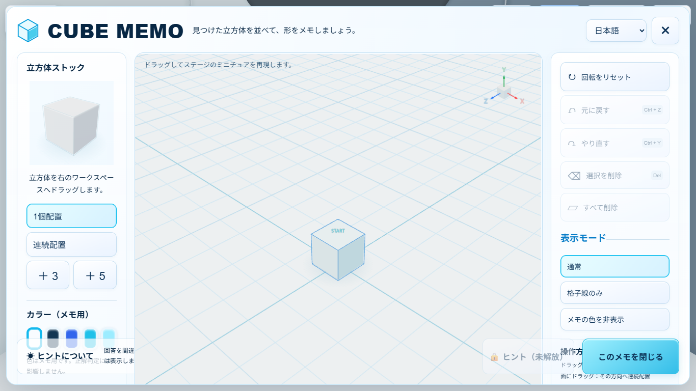
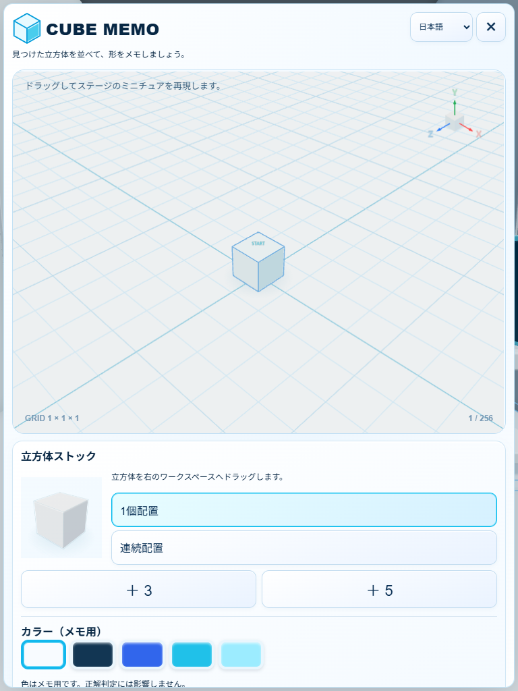
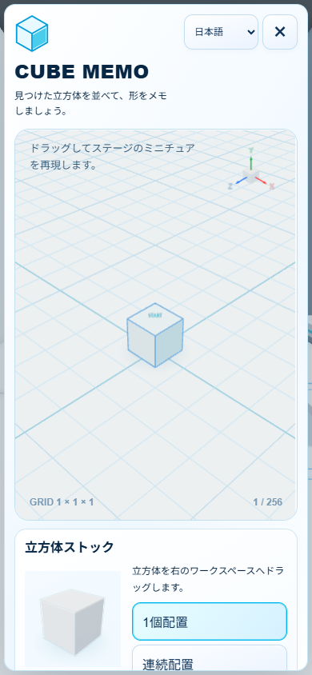
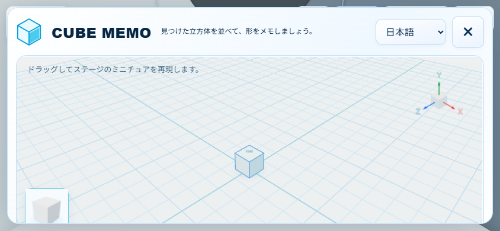
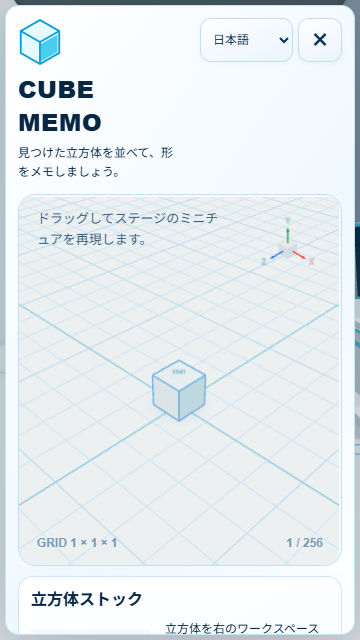

STAGE 1-1 ONLY · READY FOR USER QA
CUBE MEMO
Prototype Fix + Visual Fidelity
操作不能の原因を実測して修正し、平面配置から実際の3D編集へ置換。その他30Stageへの展開は行っていません。
操作不能のRoot Cause
親UIの pointer-events: none をMemoが継承。8箇所の実Pointer入力は全て背後の game-canvas に到達していました。透明なMemo Canvasが覆っていたわけではありません。
Memo rootに入力所有を明示し、Canvasは中央Viewportだけに限定。本編InputとMemo Inputを分離しました。Close X／フッター／Escape、再開後の位置・カメラ・時間を実操作確認しています。
修正前のイベント／ヒットテスト記録
Current Prototype → Fixed Prototype

修正前。クリック不能、Stock空白、2Dグリッド。
修正後。比較用の非正解形ミニチュアをQA fixtureとして配置。実ドラッグ検証は別途実施。Official Mock Target — Visual Source of Truth

提供モックは参考資料として保持。画像内テキストをゲームUIへ焼き込まず、操作パネルは全てDOM＋9言語辞書です。白／淡い青／濃紺／シアン、左右ツールパネル、キューブStock、中央3D、ヒント説明とCloseの構成を反映。キューブは共通ベベルGeometry＋PBR、低解像度の独自生成環境反射と接触影で描画します。
配置とヒント

Drop前はゴーストだけ。実データは未確定。無効位置は淡い赤い輪郭。
誤答1回目→探索へ戻る→Memo→ヒントを実操作。既存の正しい位置だけを強調し、不足分は表示しません。ヒント消費はUndo対象外。Close→探索→再オープンでもGlowを維持。旧Prototypeの保存済みノートは有効な位置・色を移行し、無制限利用できていた旧ヒントフラグは引き継ぎません。
座標Mapping・保存・入力契約
実操作QA
| 対象 | 結果 |
|---|
| Stock Drag、Drop、Y積み上げ、Ghost | PASS |
| Face Drag、＋3／＋5、Y面／負X面 | PASS |
| 選択／削除、Undo／Redo、Delete All、Color | PASS |
| 通常／格子線／色非表示、Orbit／Wheel | PASS |
| Close X／Footer／Escape、再開／ノート保持 | PASS |
| ヒントLocked→Incorrect→Unlock→Glow維持 | PASS |
| 9言語Runtime切替、縦横9言語はみ出し監査 | PASS |
| 既存131＋Memo22テスト／Build | 153 / 153 PASS、Build PASS |
テストは実際のproduction bundleとEdgeを使用。誤答フローは本編の端末位置へテスト配置後、E・選択・Submitを実操作しています。テスト用instance公開は通信インターセプト内だけで、配布コードへ追加していません。
編集・ヒント・9言語記録 ／ 追加操作・性能記録 ／ 7サイズ記録 ／ 9言語×縦横記録
Responsive / Touch

1366×768
768×1024
390×844
844×390：Workspace内にもStock導線
360×6401920×1080、1366×768、1024×768、768×1024、390×844、844×390、360×640を検証。タッチ設定ではStock Drag、空白Orbit、Pinch、Footer Closeを確認。
Browser emulation: PASS / Physical device: NOT TESTED
描画負荷と回帰
11Cube時：40 Draw calls、3,368 triangles、8 textures。CPU側render呼出し中央値約1.1ms／95%点約2.1ms（最初の測定）。GPU時間や実機FPSの保証値ではありません。最新の測定値はJSON参照。
Memo無操作中は再描画なし。Memo表示中は本編のrender frame数・時間・位置が進まないことを確認。Rendererは初回Open時だけ生成、Geometryは共用。重いポスト処理や外部画像ダウンロードはありません。
本編Stage形状／31問／物理／回答判定／2回答／Home／Showcase／Correct／SDK／Robloxファイルは変更していません。本編への変更はMemoの入力・描画休止、Stage 1-1限定、誤答通知の接続に限定。
残確認：物理モバイル端末、YouTubeホスト実環境、最終的な見た目のユーザー承認。ビルドには既存の500kB超chunk警告があります。